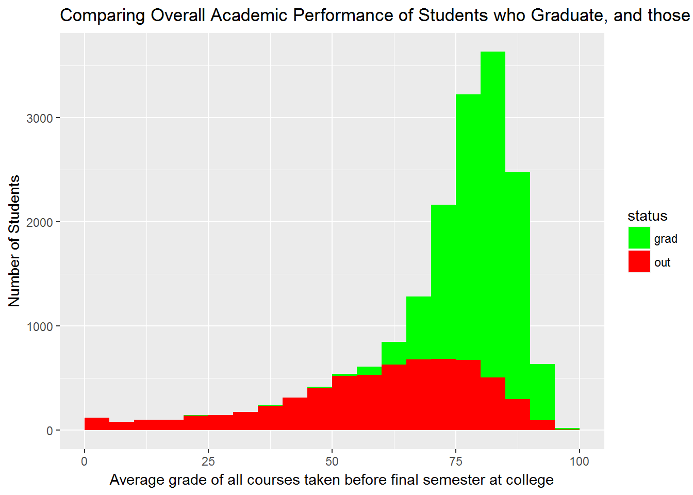
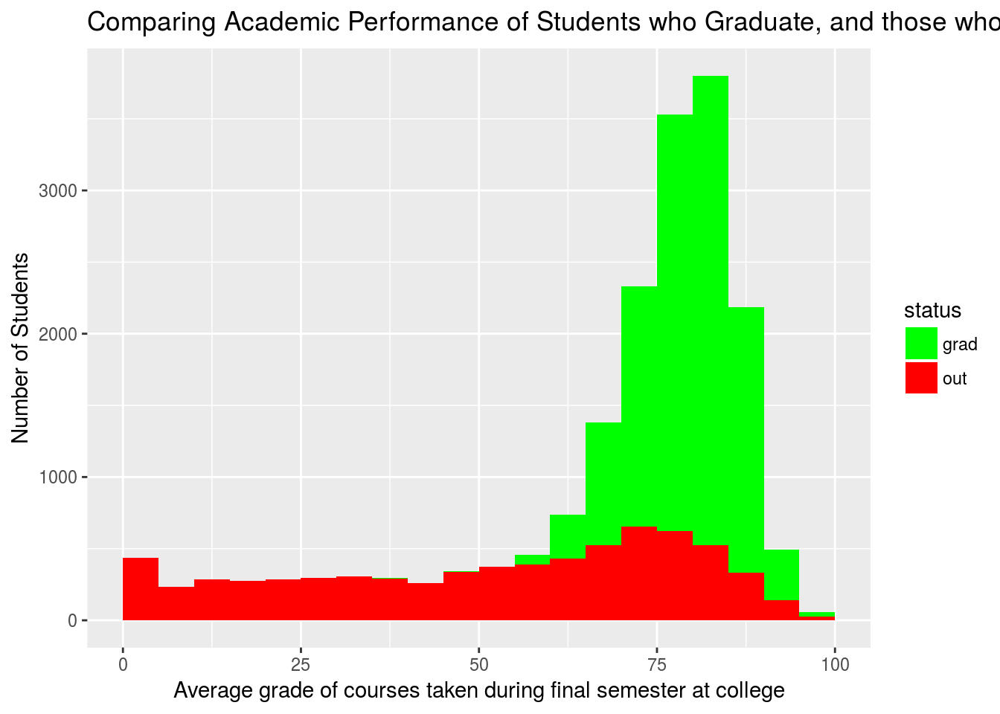
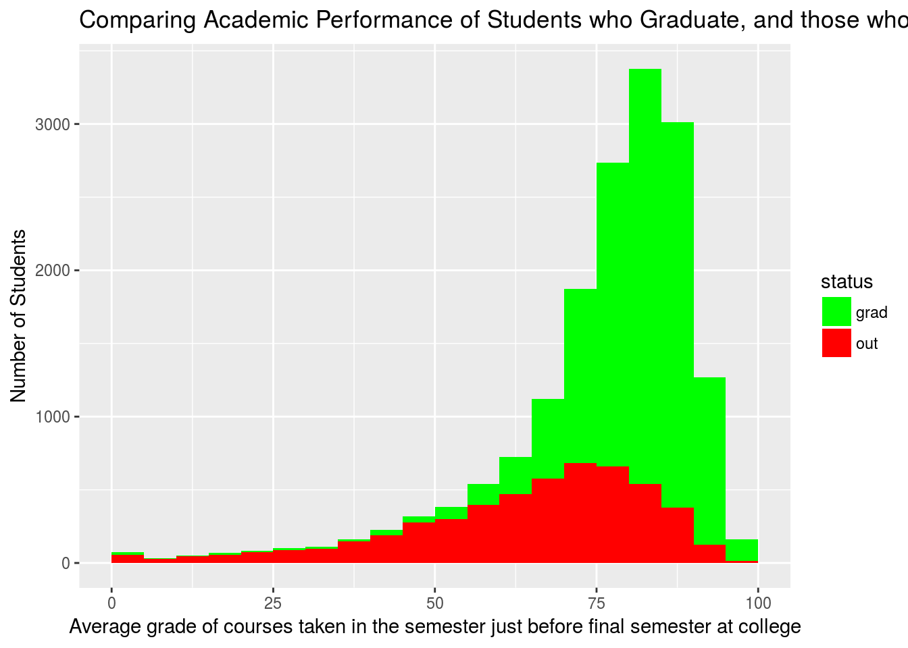
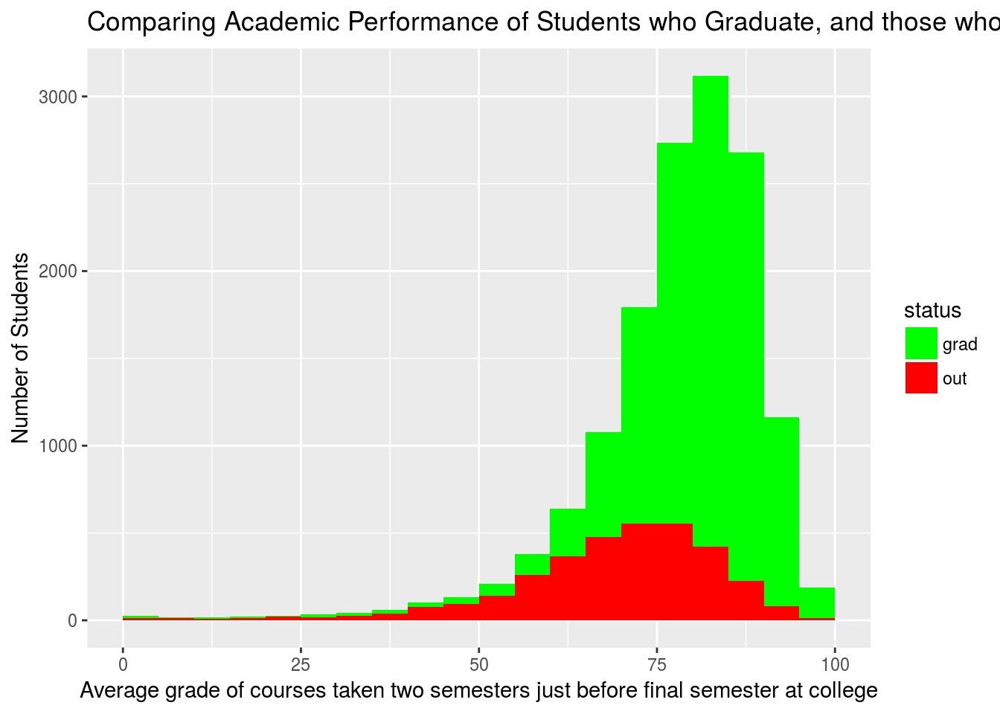
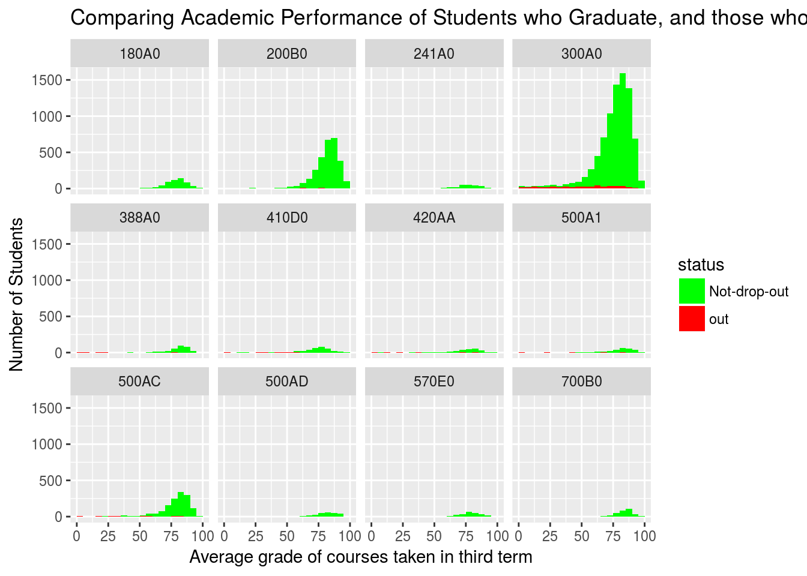
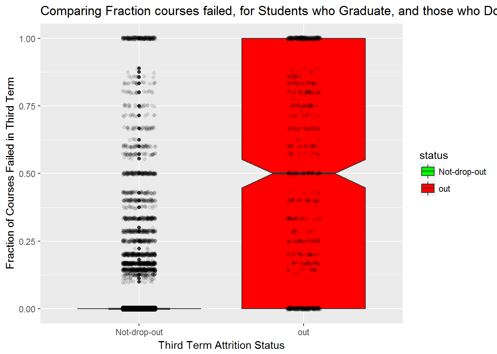

Chapter 4 Descriptive Statistics
** Under Construction **
Here in we will describe - the data set - the methods by which we label students at risk - the distributions of at-risk students by - demographic indicators - registration record indicators
4.1 Demographics across the colleges and major programs
4.1.1 Dawson
| AN | AU | FR | Sum | |
|---|---|---|---|---|
| F | 0.33 | 0.15 | 0.12 | 0.6 |
| M | 0.23 | 0.1 | 0.07 | 0.4 |
| Sum | 0.56 | 0.25 | 0.19 | 1 |
4.1.2 John Abbott College
| AN | AU | FR | Sum | |
|---|---|---|---|---|
| F | 0.31 | 0.09 | 0.12 | 0.52 |
| M | 0.3 | 0.07 | 0.11 | 0.48 |
| Sum | 0.61 | 0.16 | 0.23 | 1 |
4.1.3 Vanier
| AN | AU | FR | Sum | |
|---|---|---|---|---|
| F | 0.26 | 0.17 | 0.1 | 0.53 |
| M | 0.24 | 0.16 | 0.08 | 0.48 |
| Sum | 0.5 | 0.33 | 0.18 | 1.01 |
4.2 Academic Performance in Semesters leading to drop-out
4.2.1 Grades
Do students who drop out do so because of poor grades? What fraction of students are counted year after year as drop-outs and labeled as problems to be solved by the system while being exemplary students in terms of academic performance. Armed with this dataset, we can get the answer to that question. Let us begin by looking at the average grades of students who eventually dropped out compared to grades of students who haven’t. The following set of graphs will look at that comparison for 3 different semesters: the semester in which they dropped out (or graduated), the semester before that and the one before that. Let us see what the data says. 
##
## Welch Two Sample t-test
##
## data: Average_all_courses by status
## t = 78.251, df = 7349.6, p-value < 2.2e-16
## alternative hypothesis: true difference in means is not equal to 0
## 95 percent confidence interval:
## 20.36923 21.41600
## sample estimates:
## mean in group grad mean in group out
## 79.97370 59.08109From the average total grade between the drop outs and the graduates, we can clearly see that the distributions are significantly different, but what is surprising is that 22% of students have an average grade above 75% and that more than 52% of the students who dropped out had an average grade above 60%. In other words, most students who drop out have passing averages. One hypothesis for this effect is that students who end up dropping out start with good semesters and have their performance decline closer to the final semester. Let us verify this hypothesis.
Let us now look at the performance of drop outs vs graduates on a semester by semester basis. Let us start by looking at the average grades of students in their last semester during which they are either graduating or dropping-out.

##
## Welch Two Sample t-test
##
## data: avg_grade by status
## t = 84.649, df = 7619.5, p-value < 2.2e-16
## alternative hypothesis: true difference in means is not equal to 0
## 95 percent confidence interval:
## 27.00250 28.28279
## sample estimates:
## mean in group grad mean in group out
## 79.17656 51.53391In this data, we can clearly observe a stark difference between the graduates and the drop outs. First of all, note that 23% of students still have a term average over 75% in the semester in which they drop out. To push it further 15% of students who drop out have an average grade over 80%. The data clearly suggests that some of the drop outs aren’t dropping out because of academic performance. Furthermore, the long tail of the data on the low end of performance suggests that some of the students stopped coming to class prior to the end of the semester resulting in very low grades that serve to drive their cegep average grades from the graph above even lower. 34% of students have a grade below 40 suggesting that they have indeed stopped coming to school some time during the semester. What if these students hadn’t stopped coming, would their performance be similar to that of graduates?
Let us now turn our attention to the semester before the one where they graduate or drop out.

##
## Welch Two Sample t-test
##
## data: avg_grade by status
## t = 57.702, df = 6604.9, p-value < 2.2e-16
## alternative hypothesis: true difference in means is not equal to 0
## 95 percent confidence interval:
## 15.65690 16.75814
## sample estimates:
## mean in group grad mean in group out
## 80.56981 64.36230The data clearly shows that even if there are significant differences between the groups, the drop out student population is getting closer to the graduate population. A section of 33% is observed to have an average grade above 75%.
Finally, let us look at 2 semesters before they graduate or drop-out. We are again expecting the same trend.

##
## Welch Two Sample t-test
##
## data: avg_grade by status
## t = 42.166, df = 4390.4, p-value < 2.2e-16
## alternative hypothesis: true difference in means is not equal to 0
## 95 percent confidence interval:
## 10.95430 12.02262
## sample estimates:
## mean in group grad mean in group out
## 80.42574 68.93729One of the profile level Key Performance Indicators that colleges are supposed to specifically keep track of is third semester retention. In this light, we can somewhat flip the line of questionning above, and look to see if the distribution of grades in the third semester students looks different for those who will drop out, and those who will continue on.

In conclusion, the data strongly suggests that there are approximately 20% of students who consistently have averages above 75%, but still drop out. Therefore, that section of the drop out population is a section that will always go undetected if only traditional academic failure metrics are used to assess which students are likely to drop out. Students who move out to the US or the rest of Canada after their second semester and those who drop out by lack of interest are two potential student types that will always drop out no matter what remedial solutions are offered for them.
4.2.2 Passed vs. Failed Courses
The line of questionning above can be repeated, but instead of looking at the average grade of courses taken in a term, we can instead look to see if the number of courses passed, or the proportion failed, might be different for students who drop out versus those who do not.
| 0 | 1 | 2 | 3 | 4 | 5 | 6 | 7 | 8 | 10 | |
|---|---|---|---|---|---|---|---|---|---|---|
| Not-drop-out | 11339 | 1320 | 447 | 216 | 116 | 66 | 34 | 8 | 2 | 0 |
| out | 263 | 113 | 93 | 80 | 134 | 109 | 59 | 36 | 15 | 1 |
What we remark in the table above is that the number of courses failed does not seem to differentiate students who will drop out after their third term. But perhaps, we should consider the fraction of courses that a student took in their third term, and failed?

For the above graphic, we calculate, for each student in their term, the fraction of courses that they took and failed, and we plot the distributions for the group of students we know who dropped out, and those we know stayed in the college for a fourth term. The red boxplot shows that,of the students who dropped out after their third term, 50% of them failed more than than half of their classes in that third term (the central notch represents a 95% confidence interval on the median). Conversely, the distribution on the left, squashed down at 0, shows that almost all students who stay on for a fourth term, pass all of their third term classes (The additional dots shown in this distribution are considered outliers to the distribution, meaning there are some students who failed all of their third term classes, and decided to stay for an additional fourth term).